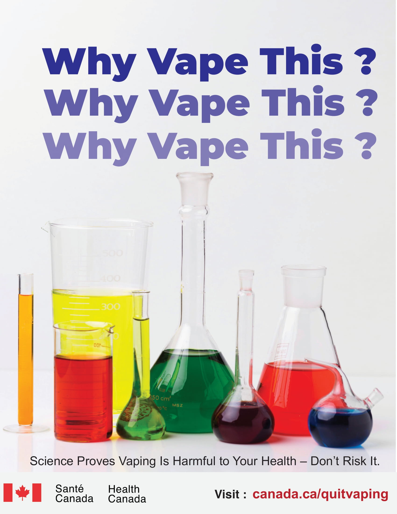
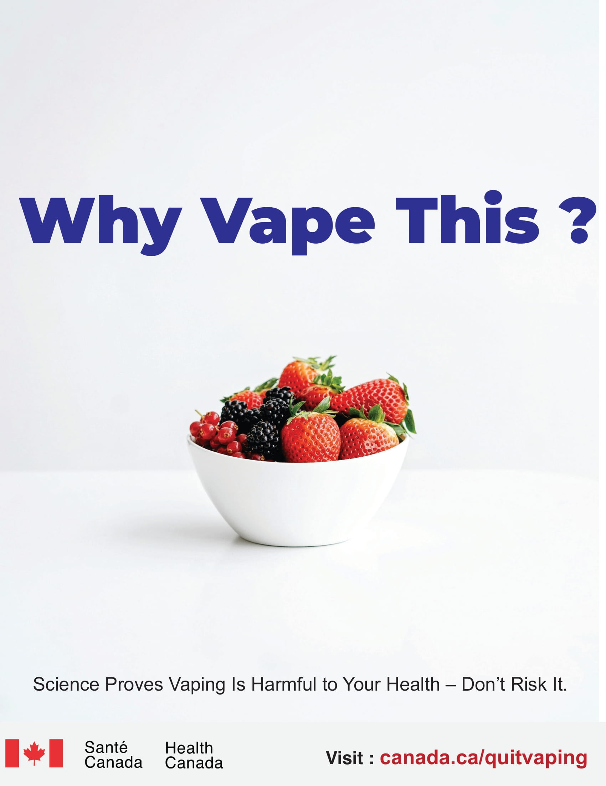

This campaign highlights the rising concern over the growing trend of vaping, particularly among teenagers and young adults. Despite its appeal as a "safer" alternative to smoking, vaping poses significant health risks that are often overlooked. From severe lung issues to mental health consequences, the dangers of e-cigarettes are becoming increasingly evident.
Initially, many people, especially the younger audience, were unaware of the severe health risks related to vaping. The perception of vaping as a safer alternative to smoking posed a significant challenge in getting the message across. Convincing this demographic that vaping is harmful required addressing widespread misconceptions and presenting facts backed by research.
The target audience for this campaign was primarily teenagers and young adults. However, reaching this demographic in an impactful way proved challenging, as they are often resistant to traditional awareness campaigns. Creating content that resonates with their interests and communicates the gravity of the issue was a significant hurdle.
Vaping is a sensitive issue, especially for individuals who may already be addicted to e-cigarettes. Striking the right tone between raising awareness without alienating or shaming users was a delicate balancing act. We had to ensure the message was both educational and empathetic, without being too harsh or judgmental.
To combat misconceptions, I focused on gathering factual, scientifically-backed data that clearly outlined the risks of vaping. We used a combination of statistics, medical studies, and expert opinions to dispel myths. This approach helped clarify the actual dangers and made the campaign more credible.
To effectively engage the youth, we designed the campaign visuals to be bold, interactive, and social media-friendly. We used visually appealing graphics and catchy phrases like why ? smoke this.
To avoid alienating users, we used empathetic messaging that acknowledged the struggles of individuals already affected by vaping. We provided helpful resources, such as quitting programs, to support people who wanted to stop vaping. This solution was key in keeping the message both compassionate and impactful.